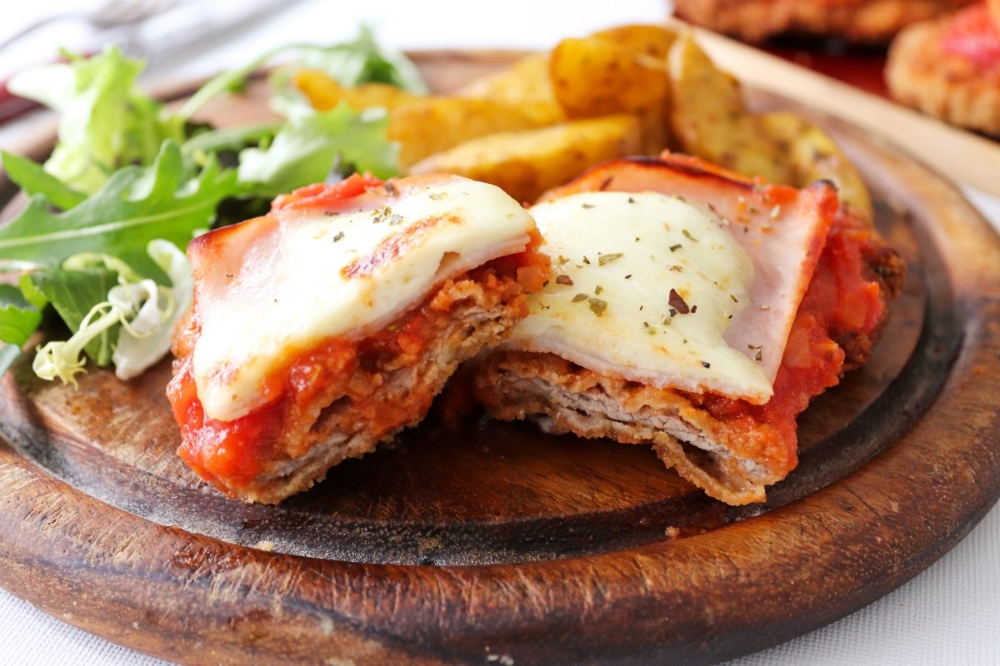

Milanesas a la napolitana

Do you want to learn how to make this traditional Argentine dish?
Ingredients:
- 2 chicken breasts
- 500 gr bread crumbs
- 2 eggs
- Fresh parsley
- Salt
- Black pepper
- Oil to fry
Steps:
- Crack the eggs in a bowl that's about th size of the chicken breasts and
stir them vigorously
- Put a bed of bread crumbs in a plate or pan where the chicken can lay comfortably
- Chop the parsley as small as possible
- Add salt, pepper and the parsley to the beaten eggs
- Cut the chicken breasts into thin slices
- Submerge the chicken in the egg and then place it on the bread bed. Flip it and make sure that the bread
covers the entirety of the chicken
- Heat up a pan with oil. Use a little bit of bread crumbs to check when the oil is ready for the chicken.
You can tell it's ready when the crumbs start making bubbles instead of sinking
- Place the milanesa in the oil, leave it for a few minutes then flip. It will be ready when they turn a nice golden brown color.